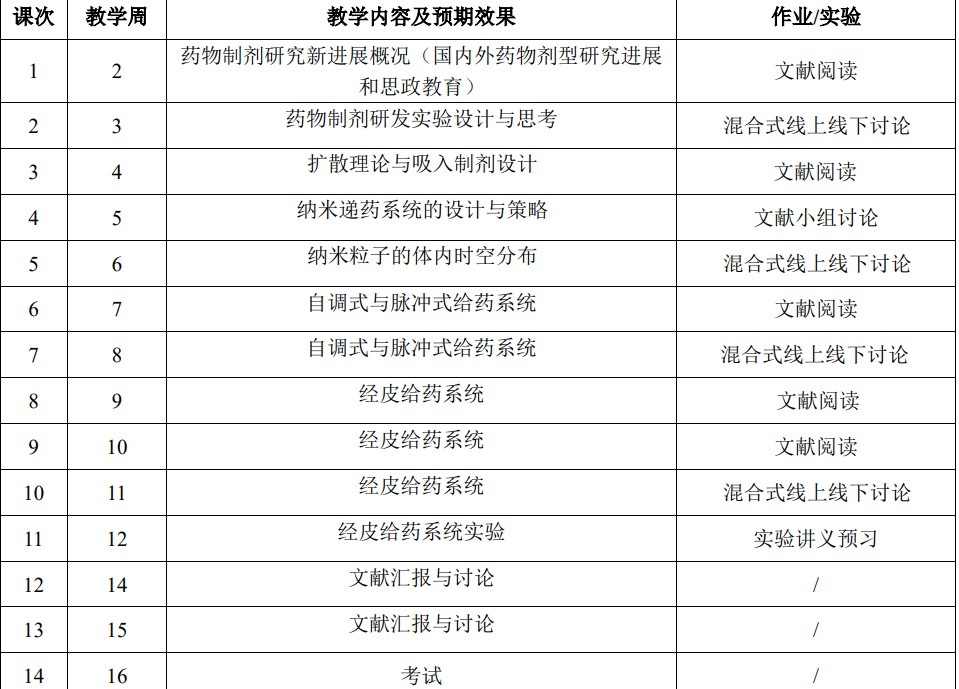

2025秋 · PHAR60023.01 · 沙先谊、张志文、姜嫣嫣、沈腾
来源：复旦教务系统教学大纲，本轮使用已授权账号下载。原始正文与考核信息；去除联系方式和网页脚本，内嵌图片按原字节去重保存。
课程是一门面向药学及相关专业研究生开设的进阶课程，深入探讨现代药剂学的前沿领域与技术进展。课程通过理论讲授、文献研读与案例研讨相结合的方式，涵盖新型药物递送系统（如纳米制剂、靶向给药、透皮给药、吸入给药技术）、药物稳定性与处方设计等核心内容，着重培养学生对复杂制剂设计的科学思维与创新能力，同时关注工业化生产中的转化应用挑战。
The course is an advanced course designed for graduate students majoring in pharmacy and related fields, focusing on the rising front fields and technological advancements of modern pharmaceutics. The course combines theoretical teaching, experimental courses, literature review, and case discussion, such as novel drug delivery systems (nanomedicine, targeted drug delivery, transdermal drug delivery, inhalation drug delivery technology), drug stability, and formulation design.
围绕药剂学解决的核心科学问题，学习现代药剂学的最新进展、新型药物递送系统的理论和新技术掌握研制和开发高效、低毒、长效的新剂型理论基础和实验技能，培养研究生具有独立思考和承担新剂型基础研究和新药研究的能力，有助于研究生研究课题的设计和工作开展。
线上与线下混合式教学方式
课程内容与进度安排如下表所示：

| 项目 | 比例 | 评定说明 |
|---|---|---|
| 出勤Attendance | 5.0% | 全勤满分，缺席 1 次扣除 1 分，最高扣减 5 分。 |
| 分组讨论Group Discussion | 20.0% | 从讨论参与度（1-5分）、科学问题（1-10分）与团队合作（1-5分）三个方面评分。 |
| 作业/实验/实践Assignment | 15.0% | 完成作业与实验 15 分，较好完成作业与实验 12分，其他视情况而定。 |
| 期末考试Final Examination：开卷 | 60.0% | 成绩 |